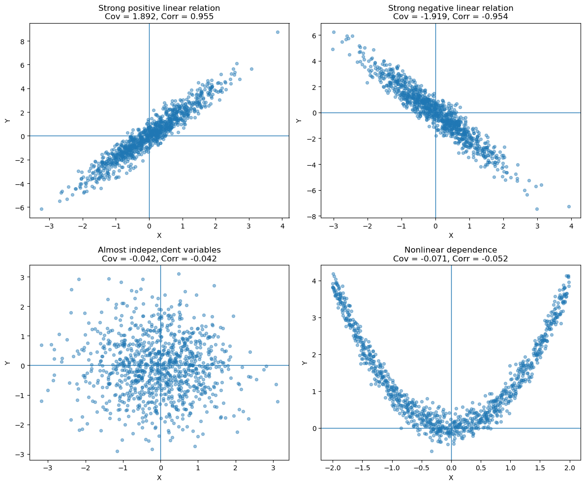
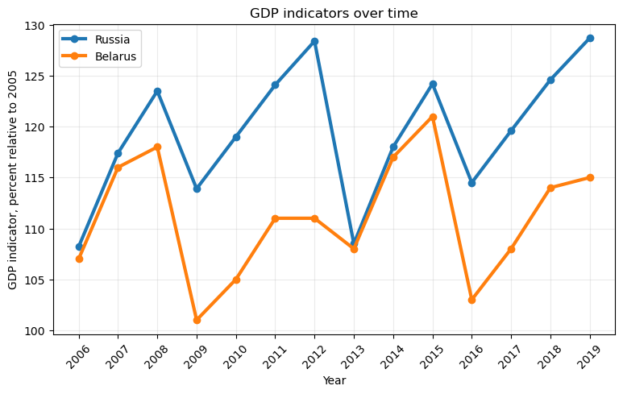
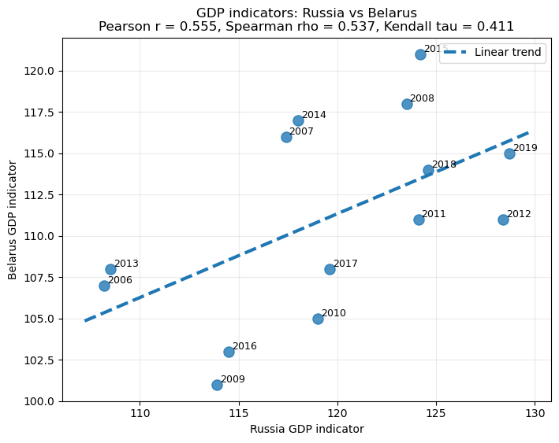
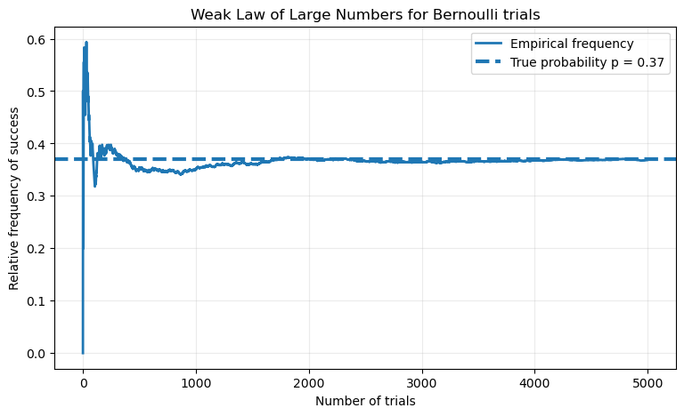

Show Python code
import numpy as np
import matplotlib.pyplot as plt
np.random.seed(42)In many applications we are interested not only in the behavior of a single random variable, but also in the relationship between two random variables.
Covariance measures the direction of the linear relationship between two variables, while the correlation coefficient gives a normalized measure that always lies between \(-1\) and \(1\).
These quantities are fundamental throughout statistics, machine learning, finance, econometrics, and data analysis.
Let \(\xi\) and \(\eta\) be two random variables with finite expectations.
The covariance between \(\xi\) and \(\eta\) is defined as
\[ \operatorname{Cov}(\xi,\eta) = \mathbb E\!\left[(\xi-\mathbb E\xi)(\eta-\mathbb E\eta)\right]. \]
Using linearity of expectation,
\[ \boxed{ \operatorname{Cov}(\xi,\eta) = \mathbb E[\xi\eta] - \mathbb E[\xi]\, \mathbb E[\eta]. } \]
Intuitively,
For any random variables \(\xi,\eta,\xi_1,\xi_2\) and constants \(a,b\),
Symmetry
\[ \operatorname{Cov}(\xi,\eta) = \operatorname{Cov}(\eta,\xi). \]
Covariance with itself
\[ \operatorname{Cov}(\xi,\xi) = \operatorname{Var}(\xi). \]
Linearity
\[ \operatorname{Cov}(a\xi_1+b\xi_2,\eta) = a\,\operatorname{Cov}(\xi_1,\eta) + b\,\operatorname{Cov}(\xi_2,\eta). \]
Independence implies zero covariance
If \(\xi\perp\!\!\!\perp\eta\), then
\[ \operatorname{Cov}(\xi,\eta)=0. \]
However, the converse is generally false: zero covariance does not imply independence.
One of the most useful applications of covariance is computing variances of sums.
For any random variables \(\xi_1,\ldots,\xi_n\),
\[ \boxed{ \operatorname{Var}\!\left( \sum_{i=1}^{n}\xi_i \right) = \sum_{i=1}^{n}\sum_{j=1}^{n} \operatorname{Cov}(\xi_i,\xi_j). } \]
Equivalently,
\[ \operatorname{Var}\!\left( \sum_{i=1}^{n}\xi_i \right) = \sum_{i=1}^{n}\operatorname{Var}(\xi_i) + 2\sum_{i<j} \operatorname{Cov}(\xi_i,\xi_j). \]
If the variables are independent, all covariance terms vanish, giving
\[ \operatorname{Var}\!\left( \sum_{i=1}^{n}\xi_i \right) = \sum_{i=1}^{n}\operatorname{Var}(\xi_i). \]
Since covariance depends on the units of measurement, it is difficult to compare across different datasets.
The correlation coefficient normalizes covariance by the standard deviations:
\[ \boxed{ \operatorname{Corr}(\xi,\eta) = \frac{\operatorname{Cov}(\xi,\eta)} {\sqrt{\operatorname{Var}(\xi)} \sqrt{\operatorname{Var}(\eta)}}. } \]
The correlation coefficient is dimensionless and satisfies
\[ -1 \le \operatorname{Corr}(\xi,\eta) \le 1. \]
Its interpretation is straightforward:
import numpy as np
import matplotlib.pyplot as plt
np.random.seed(42)n = 1000
X1 = np.random.normal(0, 1, n)
Y1 = 2 * X1 + np.random.normal(0, 0.6, n)
X2 = np.random.normal(0, 1, n)
Y2 = -2 * X2 + np.random.normal(0, 0.6, n)
X3 = np.random.normal(0, 1, n)
Y3 = np.random.normal(0, 1, n)
X4 = np.random.uniform(-2, 2, n)
Y4 = X4**2 + np.random.normal(0, 0.2, n)
datasets = [
(X1, Y1, "Strong positive linear relation"),
(X2, Y2, "Strong negative linear relation"),
(X3, Y3, "Almost independent variables"),
(X4, Y4, "Nonlinear dependence")
]
plt.figure(figsize=(12, 10))
for i, (X, Y, title) in enumerate(datasets, 1):
cov = np.cov(X, Y, ddof=0)[0, 1]
corr = np.corrcoef(X, Y)[0, 1]
plt.subplot(2, 2, i)
plt.scatter(X, Y, alpha=0.45, s=18)
plt.axhline(0, linewidth=1)
plt.axvline(0, linewidth=1)
plt.title(f"{title}\nCov = {cov:.3f}, Corr = {corr:.3f}")
plt.xlabel("X")
plt.ylabel("Y")
plt.tight_layout()
plt.show()
The following data (this is not real data BTW) represent GDP growth indicators (in percent relative to the year 2005) for Russia and Belarus over the same 14-year period.
Russia
\[ \begin{aligned} 108.2,\; 117.4,\; 123.5,\; 113.9,\; 119.0,\; 124.1,\; 128.4,\; 108.5,\; 118.0,\; 124.2,\; 114.5,\; 119.6,\; 124.6,\; 128.7 \end{aligned} \]
Belarus
\[ \begin{aligned} 107,\; 116,\; 118,\; 101,\; 105,\; 111,\; 111,\; 108,\; 117,\; 121,\; 103,\; 108,\; 114,\; 115 \end{aligned} \]
Our goal is to determine whether these two samples appear to be statistically independent.
plt.figure(figsize=(9, 5))
plt.plot(years, russia, marker="o", linewidth=3, label="Russia")
plt.plot(years, belarus, marker="o", linewidth=3, label="Belarus")
plt.title("GDP indicators over time")
plt.xlabel("Year")
plt.ylabel("GDP indicator, percent relative to 2005")
plt.xticks(years, rotation=45)
plt.legend()
plt.grid(alpha=0.25)
plt.show()
import numpy as np
import matplotlib.pyplot as plt
from scipy.stats import pearsonr, spearmanr, kendalltau
russia = np.array([108.2, 117.4, 123.5, 113.9, 119.0, 124.1, 128.4,
108.5, 118.0, 124.2, 114.5, 119.6, 124.6, 128.7])
belarus = np.array([107, 116, 118, 101, 105, 111, 111,
108, 117, 121, 103, 108, 114, 115])
years = np.arange(2006, 2020)
pearson_corr, pearson_p = pearsonr(russia, belarus)
spearman_corr, spearman_p = spearmanr(russia, belarus)
kendall_corr, kendall_p = kendalltau(russia, belarus)plt.figure(figsize=(8, 6))
plt.scatter(russia, belarus, s=90, alpha=0.8)
for year, x, y in zip(years, russia, belarus):
plt.text(x + 0.15, y + 0.15, str(year), fontsize=9)
coef = np.polyfit(russia, belarus, 1)
x_line = np.linspace(russia.min() - 1, russia.max() + 1, 100)
y_line = coef[0] * x_line + coef[1]
plt.plot(x_line, y_line, linewidth=3, linestyle="--", label="Linear trend")
plt.title(
"GDP indicators: Russia vs Belarus\n"
f"Pearson r = {pearson_corr:.3f}, Spearman rho = {spearman_corr:.3f}, Kendall tau = {kendall_corr:.3f}"
)
plt.xlabel("Russia GDP indicator")
plt.ylabel("Belarus GDP indicator")
plt.legend()
plt.grid(alpha=0.25)
plt.show()
In many situations the exact distribution of a random variable is unknown or difficult to compute.
Instead of finding exact probabilities, we seek upper bounds for probabilities of large deviations from typical values.
Let \(\xi\ge0\) be a nonnegative random variable with finite expectation.
Then for every \(a>0\),
\[ \boxed{ \mathbb P(\xi\ge a) \le \frac{\mathbb E[\xi]}{a}. } \]
This inequality requires only the existence of the expectation and makes no assumptions on the distribution. Although often crude, it serves as the starting point for many stronger inequalities.
Suppose \(\xi\) has finite expectation and finite variance.
Then for every \(\varepsilon>0\),
\[ \boxed{ \mathbb P \left( |\xi-\mathbb E\xi| \ge \varepsilon \right) \le \frac{\operatorname{Var}(\xi)} {\varepsilon^2}. } \]
Unlike Markov’s inequality, Chebyshev’s inequality uses both the expectation and the variance.
Suppose \(X_1,X_2,\ldots\) are independent and identically distributed random variables satisfying
\[ \mathbb E[X_i]=\mu, \qquad \operatorname{Var}(X_i)=\sigma^2<\infty. \]
The sample mean is \(\overline X_n=\frac1n\sum_{i=1}^{n}X_i\).
The Weak Law of Large Numbers states that
\[ \boxed{ \overline X_n \xrightarrow{P} \mu. } \]
In other words,
\[ \lim_{n\to\infty} \mathbb P \left( |\overline X_n-\mu|>\varepsilon \right) = 0 \qquad \text{for every }\varepsilon>0. \]
One of the most important consequences of the Weak Law of Large Numbers is that it provides a mathematical justification for interpreting probability as long-run relative frequency.
Suppose we repeat the same experiment independently many times. Let
\[ X_i= \begin{cases} 1, & \text{if the event occurs on trial } i,\\ 0, & \text{otherwise}. \end{cases} \]
Then \(X_i\sim\operatorname{Bernoulli}(p)\). Therefore
\[ \mathbb E[X_i]=p, \qquad \operatorname{Var}(X_i)=p(1-p). \]
Notice that \(\sum_{i=1}^{n}X_i\) is exactly the number of times the event occurred during the first \(n\) trials. Therefore,
\[ \overline X_n = \frac{\text{Number of successes}} {\text{Number of trials}}, \]
which is precisely the empirical frequency (or relative frequency) of the event.
Applying the Weak Law of Large Numbers,
\[ \overline X_n \xrightarrow{P} p, \]
or equivalently,
\[ \boxed{ \lim_{n\to\infty} \mathbb P \left( \left| \frac{\text{Number of successes}}{n} - p \right| > \varepsilon \right) =0 \qquad (\varepsilon>0). } \]
Thus, as the number of independent repetitions increases, the observed frequency of the event becomes arbitrarily close to its true probability with probability approaching one.
This result gives a rigorous mathematical foundation for the frequentist interpretation of probability:
The probability of an event is the limiting value of its relative frequency in a large number of independent repetitions of the same experiment.
p = 0.37
n = 5000
trials = np.random.binomial(1, p, size=n)
running_frequencies = np.cumsum(trials) / np.arange(1, n + 1)
plt.figure(figsize=(9, 5))
plt.plot(running_frequencies, linewidth=2, label="Empirical frequency")
plt.axhline(p, linestyle="--", linewidth=3, label=f"True probability p = {p}")
plt.title("Weak Law of Large Numbers for Bernoulli trials")
plt.xlabel("Number of trials")
plt.ylabel("Relative frequency of success")
plt.legend()
plt.grid(alpha=0.25)
plt.show()